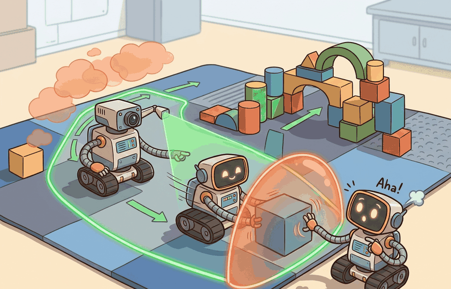

Safe sets matter when their coordinates match the controller that will use them.
A Safety-Critical Controls Researcher
A warehouse robot is 55 cm from a worker and accelerating. Its learned policy has never seen this exact configuration. Should you trust it? Control barrier functions answer that question with math, not hope: a scalar function watches the distance margin in real time and, if the nominal command would shrink it too fast, replaces that command with the nearest safe one in milliseconds, without retraining. As embodied AI moves from controlled labs into spaces shared with people, this kind of provable, always-on safety filter is no longer optional. Here you will build that filter from scratch, understand when Hamilton-Jacobi reachability offers stronger guarantees, and see exactly when each tool fits.

This section assumes familiarity with control-affine system notation and Lyapunov stability concepts introduced in section 7.2. The barrier-filter correction step also relies on the quadratic-programming formulation covered in section 7.4. The ideas here are extended in section 54.4, where barrier conditions become part of a runtime shielded-policy supervisor, and they recur in Part XII alongside learned safety certificates for uncertain environments.
Why This Matters
Control barrier functions and Hamilton-Jacobi reachability sits at the boundary between learning and safety engineering. The question is not whether the policy usually behaves well, but whether dangerous states are detected, blocked, or exited fast enough to protect people, equipment, and mission goals.
The core idea is simple: define a scalar function $h(x)$ that is positive inside the safe region and negative outside it, then demand that any control input $u$ keeps $h$ from decreasing too fast. If the nominal controller would push $h$ toward negative territory, a small correction filter replaces the offending command with the nearest admissible one, typically solved as a quadratic program in milliseconds. The robot keeps moving; it just moves in a direction that cannot exit the safe set in the next timestep. No retraining is needed, and the intervention is logged, so engineers can audit exactly when and why the filter activated.
For a control-affine system $\dot{x}=f(x)+g(x)u$, a control barrier function $h(x)$ enforces the safe set $\mathcal{S}=\{x: h(x) \ge 0\}$ through the inequality $$\nabla h(x)^{\top}(f(x)+g(x)u) + \alpha(h(x)) \ge 0.$$ Hamilton-Jacobi reachability instead reasons about a value function whose superlevel set marks states from which safety can still be guaranteed.
A barrier or reachability layer is valuable because it speaks directly in state and action geometry. It says which commands keep safety recoverable, regardless of whether the nominal controller came from optimization, imitation, or a foundation model.
CBFs are the right choice when you can write a closed-form expression for the safe set boundary and need online corrections at control frequency (1 kHz or faster). They shine for clearance margins, force limits, and joint bounds, where $h(x)$ is a simple geometric quantity. Hamilton-Jacobi reachability is the right choice when the safe set cannot be expressed analytically, when you need to account for worst-case disturbances over a time horizon, or when the system has coupled nonlinear dynamics that make barrier gradients unreliable. HJ methods solve a PDE offline over a discretized state grid, so they are expensive to compute but produce a value function that certifies safety for all states in that grid, not just the current one. In practice, teams often use HJ reachability offline to derive safe-set boundaries, then use a CBF filter online to enforce those boundaries at runtime.
Hamilton-Jacobi reachability matters in embodied AI because robots operating near humans, stairs, or fragile equipment cannot always recover from a bad state in one step. A CBF checks safety at the current instant, but HJ reachability asks whether safety is recoverable over an entire time horizon, accounting for actuator limits and worst-case disturbances. This is critical when momentum, latency, or terrain make instant correction impossible: knowing a state is in the safe recoverable set means the robot has a guaranteed escape path, not just a safe current command.
The mechanism works by defining a value function $V(x, t)$ as the solution to a Hamilton-Jacobi partial differential equation solved backward in time over a finite horizon. States where $V(x,0) \ge 0$ form the backward reachable safe set: from any such state, there exists a control sequence that keeps the system safe despite worst-case disturbances. At runtime, the robot checks whether its current state lies in this precomputed superlevel set and, if it approaches the boundary, selects the control that keeps $V$ non-decreasing.
Solving the PDE backward in time is like planning a mountain hike in reverse: instead of asking "where can I go from here?", you start from every safe summit and ask "which lower slopes can still reach me?" A slope that looks reachable when you stand on it might be a dead-end ravine with no upward path. Scanning backward from the top reveals exactly which starting positions have a guaranteed route to safety, and the boundary of that region is the line you must not cross while descending.
- Choose a reduced dynamics model and define the safe state set in coordinates that matter physically.
- Construct a barrier condition or reachable safe set that can be evaluated online.
- Given a nominal action, solve a correction step that finds the nearest admissible command.
- Log both the nominal and corrected actions for later audit.
- Validate the approximation limits, because safe-set claims are only as good as the model used to derive them.
Worked Example
A mobile robot commanded toward a human workspace can have its velocity projected onto a safe half-space that preserves clearance, even if the nominal planner wanted a more aggressive turn.
x = {"distance_m": 0.55, "velocity_mps": 0.8}
clearance = 0.5
alpha = 1.0
h = x["distance_m"] - clearance
lhs_nominal = -x["velocity_mps"] + alpha * h
u_corrected = min(x["velocity_mps"], alpha * h)
print({"h": round(h, 3), "lhs_nominal": round(lhs_nominal, 3), "u_corrected": round(u_corrected, 3)}){'h': 0.05, 'lhs_nominal': -0.75, 'u_corrected': 0.05}Expected output: The nominal velocity of 0.8 m/s is cut to 0.05 m/s, a 16x reduction, because only 5 cm of clearance margin remained. Without the filter the robot would have closed that gap in under 70 ms; with it, the approach slows to a crawl and clearance is preserved. That is the safety filter as a hard speed limit: the corrected control restores feasibility, which is the practical role of a barrier filter.
When using OSQP as the QP backend for a CBF filter, always enable the warm_starting option and set eps_abs and eps_rel to no tighter than 1e-4; tighter tolerances cause OSQP to declare infeasibility on near-boundary states that are in fact feasible, silently returning the last valid solution instead of correcting the current command. A second common gotcha is choosing the class-K function parameter alpha too large: a high alpha forces the corrected command to stay far inside the safe set on every step, which can make the QP infeasible when actuator limits are also present as constraints. Start with alpha between 0.5 and 2.0, log the solver status on every timestep, and treat any INFEASIBLE or DUAL_INFEASIBLE status as a tuning signal rather than ignoring it.
CBF and QP solvers, plus reachability toolchains, save substantial derivation and numerical work. Small filters are often prototyped with cvxpy and OSQP, while reachability studies rely on dedicated level-set or hj_reachability-style workflows once the reduced model is fixed.
Concrete stack anchors for this chapter include CasADi, python-control, Drake, cvxpy, and OSQP for modeling barrier inequalities and QP filters, ROS 2 lifecycle nodes for intervention authority, and Weights & Biases or TensorBoard traces when simulation sweeps compare constraint violations across policies. The same safety set should be visible in the notebook, simulator, and runtime controller.
| Tool | Role | Failure To Watch |
|---|---|---|
| cvxpy | Prototype barrier QPs and inspect constraints explicitly. | The deployed controller solves a different optimization than the notebook. |
| OSQP | Fast online QP backend for small safety filters. | Infeasible or poorly conditioned cases are not surfaced in logs. |
| hj_reachability-style workflows | Offline safe-set approximation for reduced dynamics. | The real robot leaves the reduced-model assumptions through delay, contact, or sensing error. |
These methods work best when the safety set can be expressed in low-dimensional coordinates that are updated reliably at runtime. They become brittle when the state estimate is poor or the reduced model hides important contact or delay effects. A practical workflow is to prototype the barrier inequality in a notebook, validate it in replay, and only then move the filter into the runtime controller path.
For auditability, save the symbolic constraint, the numeric optimization problem, the solver status, and the action before and after filtering. CasADi or Drake can make the dynamics explicit, python-control helps inspect linearized assumptions, and ROS 2 logs show whether the real intervention respected the same bound.
The dangerous mistake is to assume a formal safe-set proof transfers unchanged when the perception stack, latency profile, or actuation limits change. The proof depends on the deployed interface, not only on the math on paper.
Project Ideas
1D CBF speed limiter in Gymnasium (beginner, one weekend): Build a point-mass navigation environment in Gymnasium where a CBF filter caps the agent's velocity whenever it comes within 0.5 m of a static obstacle; the key challenge is wiring cvxpy and OSQP into the step loop fast enough to solve the QP at every timestep without breaking the training loop. Collision-avoidance barrier for a MuJoCo mobile robot (intermediate, one to two weeks): Implement a multi-constraint CBF for a differential-drive robot in MuJoCo that enforces both a human-clearance distance and a joint-velocity limit simultaneously, then measure how often the QP is infeasible as the class-K parameter alpha varies; the key challenge is ensuring the barrier gradients computed from MuJoCo's contact geometry remain numerically stable near collision boundaries. HJ reachability safe set integrated with a ROS2 safety node (intermediate, one to two weeks): Precompute a 4D Hamilton-Jacobi backward reachable set for a planar robot arm using the hj_reachability Python library, serialize it as a lookup table, and wrap it in a ROS2 lifecycle node that vetoes unsafe joint commands at 100 Hz; the key challenge is keeping the table small enough for fast lookup while maintaining enough grid resolution that the boundary error stays under 2 cm in the workspace.
Cross-References
This section connects back to Chapter 7 on control design and forward to Section 54.4 on shielded policies, where these corrections become part of a larger runtime supervisor.
Implement a tiny barrier filter for a 1D or 2D toy robot, then log nominal and corrected actions under near-boundary states. Inspect which states generate repeated corrections.
Students often assume that satisfying the CBF inequality or lying inside the HJ reachable safe set is a continuous-time, globally valid guarantee that automatically carries over to the deployed robot. In practice the proof holds only under the exact model, sampling rate, state estimate accuracy, and actuation limits used during derivation. A discretely implemented filter on a robot with 20 ms sensor latency and noisy localization can violate the barrier condition between timesteps even when the QP reports feasibility, because the continuous-time inequality is checked only at the control frequency, not between samples. The correct mental model is that CBF and HJ methods give conditional guarantees: safety is certified only when the dynamics model is accurate, the state estimate error is inside the assumed bound, the control update rate is fast enough to prevent inter-sample exit, and the actuator faithfully executes the corrected command. Treat every one of those conditions as a testable assumption, not a background fact.
Do not claim more safety than the reduced dynamics model can support. Barrier and reachability methods are powerful, but only inside the modeling assumptions they actually enforce.
On a Boston Dynamics Spot navigating a warehouse at 1.5 m/s, a CBF enforcing a 0.8 m human-clearance margin runs at 500 Hz on the onboard PC and intervenes roughly 12 times per hour in a busy aisle: each intervention cuts the commanded velocity by 40 to 90 percent for 80 to 200 ms before the nominal planner recovers. On a Franka Panda arm, a force barrier caps end-effector contact at 10 N by projecting the joint-torque command into a safe half-space whenever the ATI F/T sensor reading rises above 6 N, giving a 40 ms reaction margin before the 10 N hardware limit triggers an emergency stop. For an Agility Robotics Cassie biped operating near a stairwell, a Hamilton-Jacobi safe-set computed offline over a 6D reduced dynamics model (center-of-mass position and velocity) defines which footstep placements are recoverable; the online CBF then enforces the boundary of that precomputed set at the 1 kHz step-planning rate without re-solving the HJ PDE at runtime.
Current research is expanding barrier methods to uncertainty-aware, learned-dynamics, and multi-agent settings, but the challenge remains to keep the guarantees meaningful under real sensing and delay.
Can you say what your safe set is, in state variables, without mentioning the controller implementation? If not, the barrier idea is still too abstract.
Barrier and reachability methods matter because they define when nominal intelligence must yield to explicit safety geometry.
Define a safe set for one embodied platform, write the corresponding barrier condition or reachable-state description, and identify which state estimate errors would undermine the guarantee most.
A control barrier function is just a bouncer with a physics degree. It does not care how good the policy looks on paper; if the state is heading for the unsafe set, the bouncer says no.
Section References
Ames, A. D. et al. "Control Barrier Function Based Quadratic Programs for Safety Critical Systems." (2017). https://arxiv.org/abs/1609.06408
A core barrier-function reference.
Fisac, J. F. et al. "General Safety and Control of Autonomous Systems: A Hamilton-Jacobi Reachability-Based Approach." (2019). https://arxiv.org/abs/1810.07406
A strong introduction to reachability-based safety reasoning.
Section 54.4 widens the lens from geometric corrections to general shielded policies and runtime safety filters around learned agents.